DoorDispatcher
What it does for you
- 🗺️ Shows you which doors to knock — no guessing, no wasted driving.
- 🧭 Builds your route for the day in the tightest order.
- 🖊️ Signs the homeowner right there — it lands in our system credited to you.
- ⏳ Remembers every come-back so no deal falls through the cracks.
- 🤝 It's your accountability partner: your effort is visible, so your hard work gets noticed.
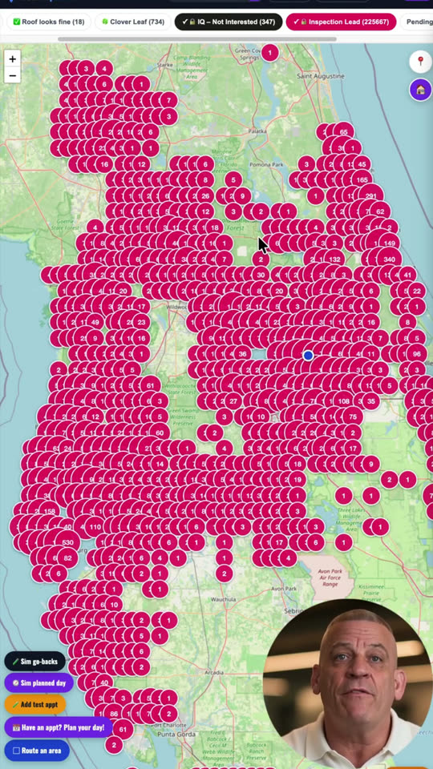
🗺️ Reading your map & pins
Each dot is a door; its color is the type. The legend across the top lists every type with a count. Gold stars are roofs we already installed — reference only.
Tap a pin to see what has happened there and which lead type it is. The homeowner's name and address unlock once the door is on your route — so you always walk up knowing who you're talking to, like a pro, never a stranger fumbling at the door.
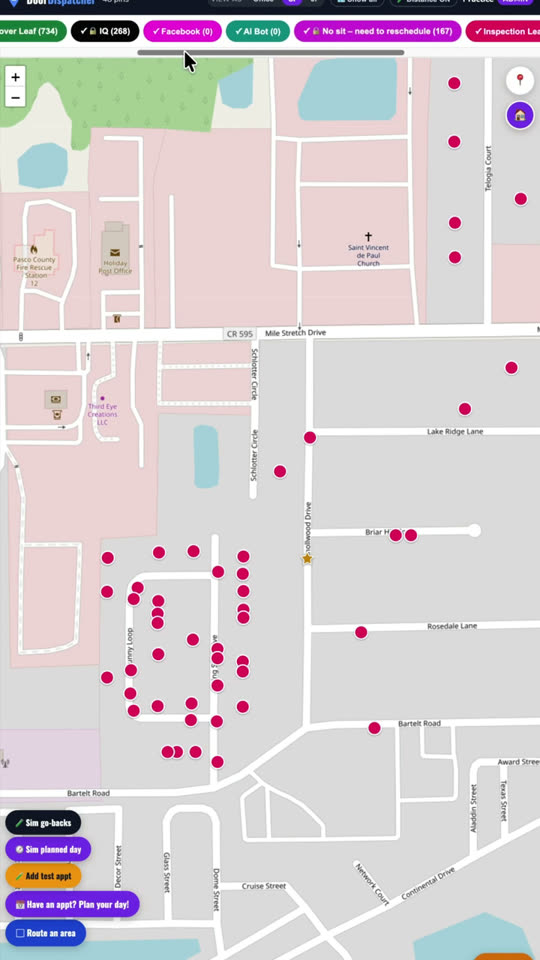
🚪 Your leads
- 🖊️ Inspection Lead — a door that needs a free roof inspection. Knock and get them signed up.
- ↩️ IQ – Not Interested — got an Instant Quote online but said no. Go win them back in person.
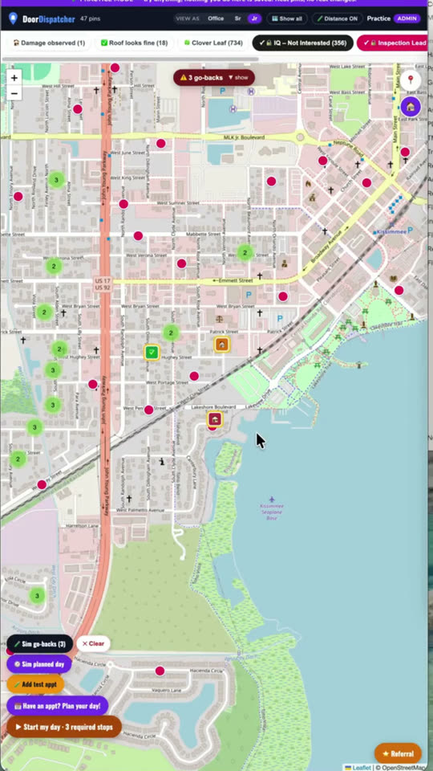
▶ Start my day
Tap ▶ Start my day. It builds one tight loop with your required stops (oldest first) and fills fresh doors around them.
Manager planned your day? You'll see a purple banner — same button, it routes your assigned doors.
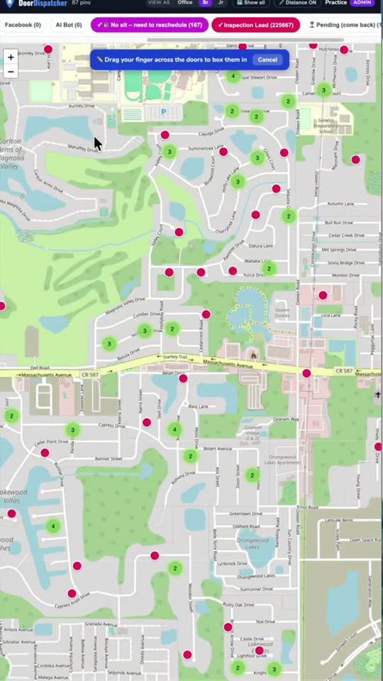
▢ Route an area
Tap ▢ Route an area, then drag a box around the doors you want.
It routes exactly those, in the tightest order — even zoomed way out.
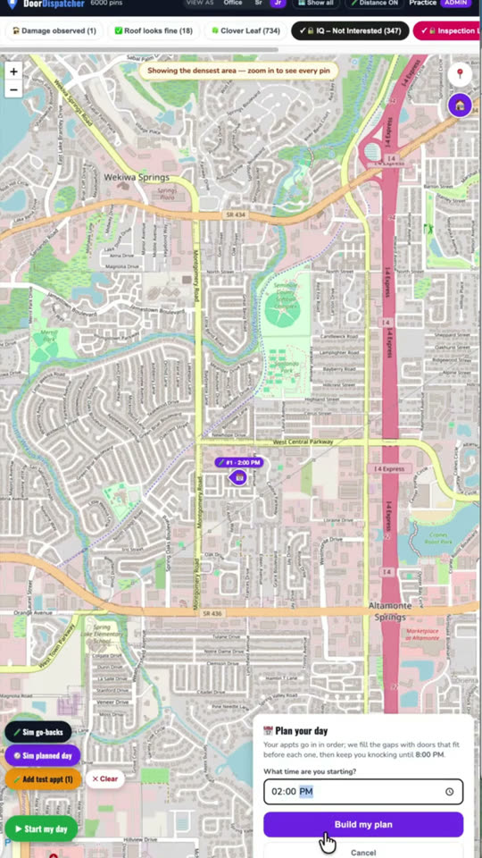
📅 Plan your day
Enter your start time. It drops the appointment in at its time and fills the gaps with doors, keeping you close so you're never late.
After the appointment, tell it how it went.
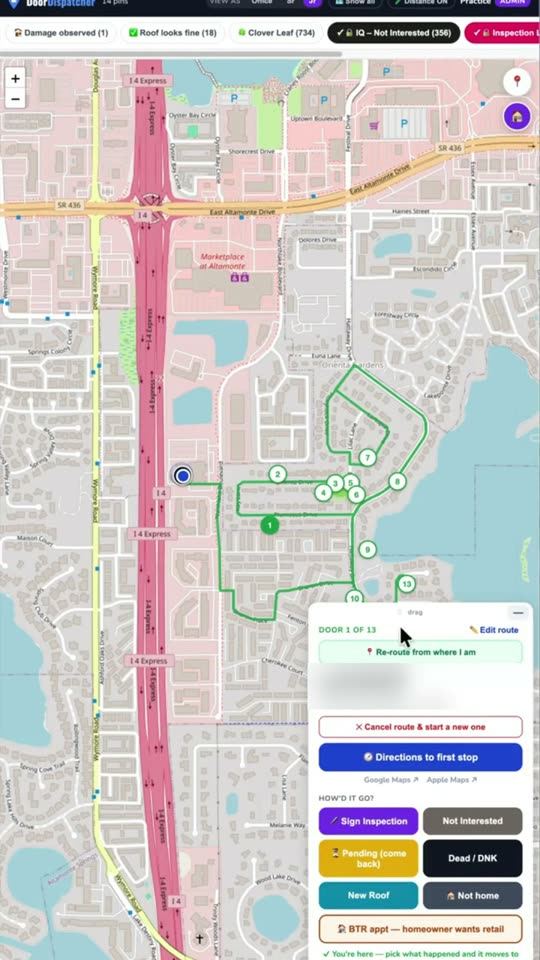
🧭 Your route card
- DOOR X of Y — where you are in the route
- ✏️ Edit route · 📍 Re-route from where I am
- 🧭 Directions — Google or Apple Maps
- Then status the door: How'd it go?
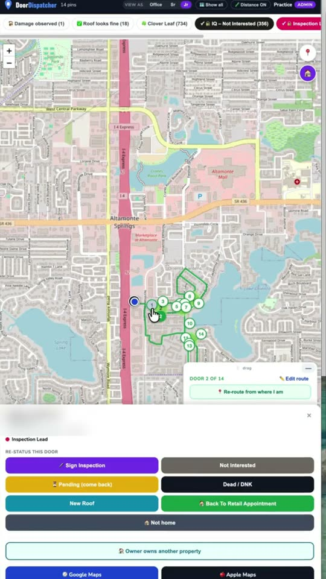
✅ How'd it go?
- 🖊️ Sign Inspection — yes to a free inspection
- ❌ Not Interested — logs it, done
- ⏳ Pending — come back; set the day and time
- 🏠 Back to Retail — book a retail appointment
- 🏠 Not home — logs the knock, door stays workable
- 🆕 New Roof — already has one
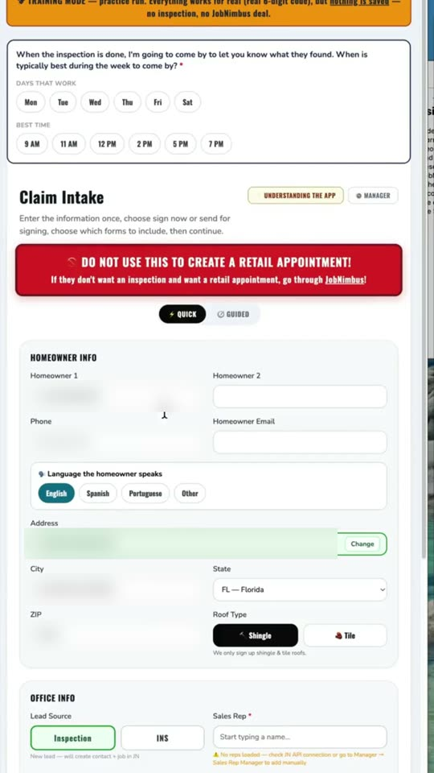
🖊️ Sign an inspection
Tap Sign Inspection. The form opens pre-filled with their address — confirm the details and submit.
The door turns Sold and it's credited to you. No paperwork tonight.
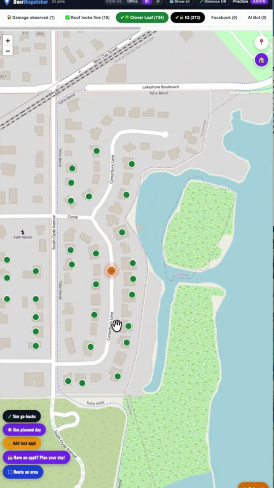
🍀 Clover Leaf
Green clover pins drop on the neighbors around a roof our crew is installing (the orange marker).
Tap one — the homeowner we're roofing is on your card, so pitch it by name.
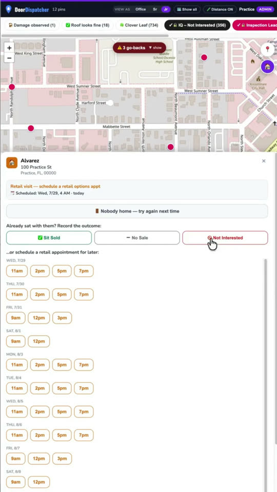
⏳ Go-backs & come-backs
When you sign someone up, ask their typical availability (e.g. Tues & Wed at 5). That's when you come back to go over their results.
The map routes you to be in that area around then — it never forgets.
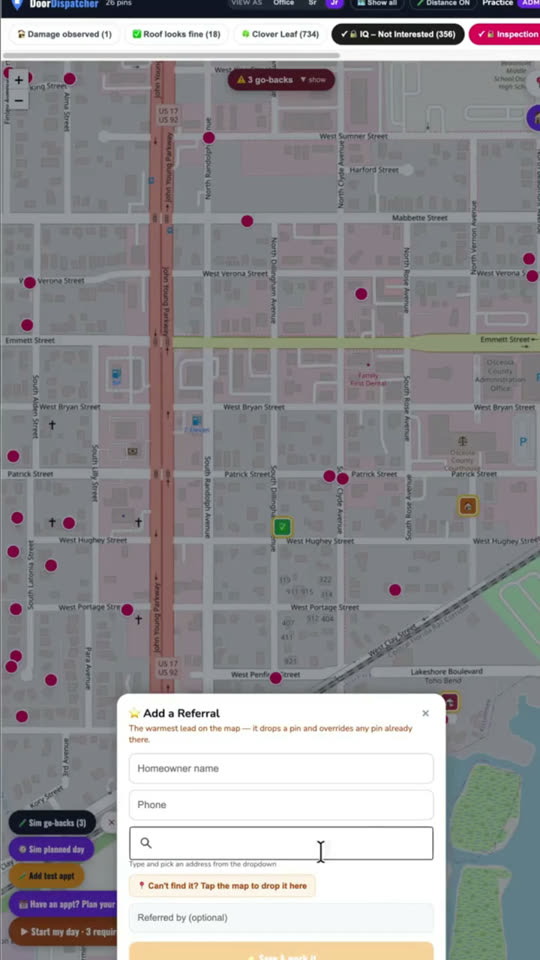
⭐ Referral
Tap ⭐ Referral, enter name, phone and address. A gold pin drops — the warmest lead on the map — and they land in your calls to make.
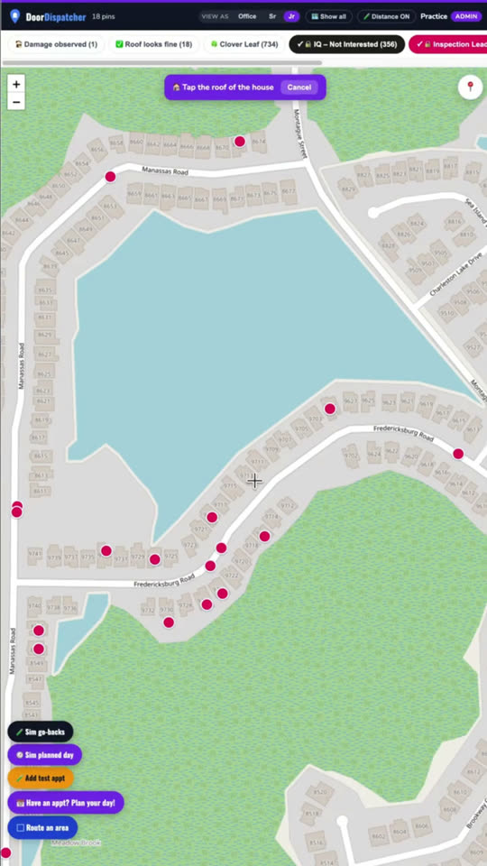
📍 Drop your own pin
Tap the 🏠 button, then tap the roof of the house. The map checks county records for owner-occupied, then lets you sign, set retail, or mark pending.
You get the credit.
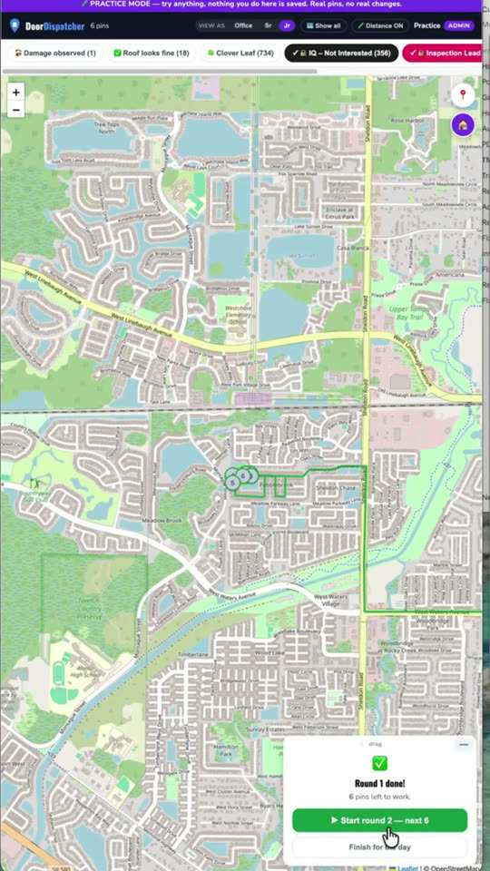
🔁 Rounds — 3 routes a day
It rebuilds your not-homes and come-backs into a new, shorter route automatically. Work that, and it builds a third.
Top earners run all three.
📲 What happens next
- You get a text and an email with your DoorDispatcher link — right now.
- Open it and watch the How to Use DoorDispatcher video.
- Take the test — it unlocks your map.
- Save the link to your home screen. That's your map in the field.